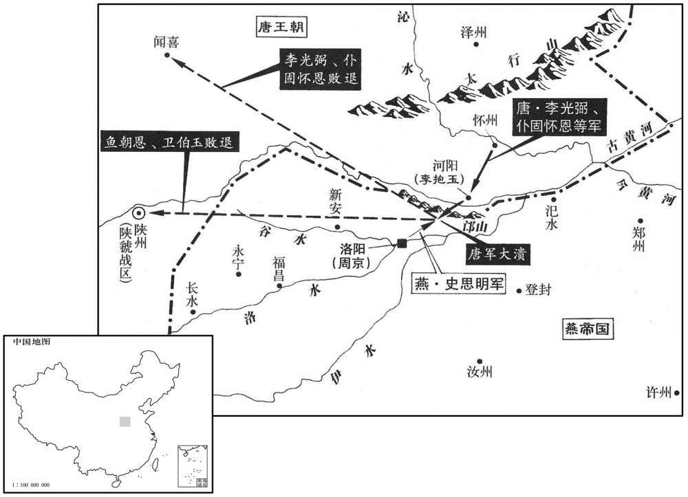
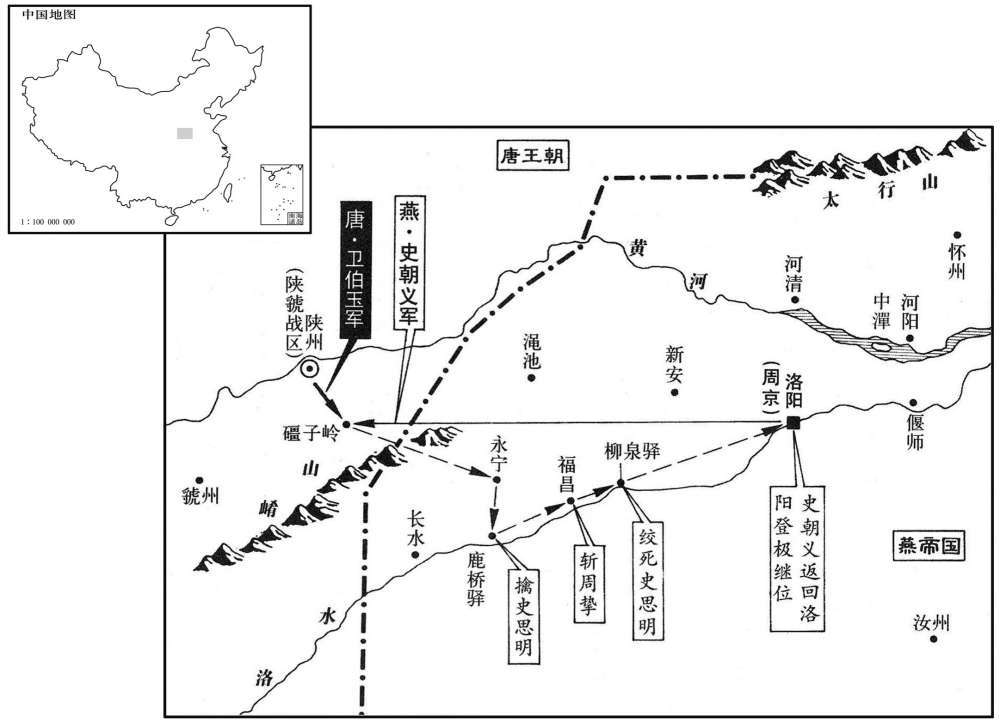

公元761年资治通鉴：本年记事、原文与白话对照
按原书编年位置阅读；追叙和史论不等于本年发生的事件。白话采用所据译本，缺译不以生成译文补齐。
卷222 · 本年记事
公元761年 · 唐肃宗文明武德大圣大宣孝皇帝上元二年
上元二年〔（辛丑、七六一）〕
上传原文的注释括号有异常，字符原样保留；无法可靠划分的段落默认全文显示。
本年事件索引（现代整理）
- 史思明改元应天
- 张景超余部攻杭州，田神功平定刘展余党
- 吕諲奏请将江南及黔中数州划归荆南
- 奴剌、党项寇宝鸡，焚大散关后为李鼎击败
- 新罗王金嶷入朝请求宿卫
- 鱼朝恩等力促进攻东京，李光弼被迫出兵
- 唐军邙山之战大败，河阳、怀州失守
- 李揆与吕諲失和，李揆被贬
- 史思明猜忌朝义，欲借战事杀害长子
- 骆悦等发动兵变，杀死史思明
- 史朝义即位改元显圣，清洗范阳异己
- 李光弼上表求贬，改领河中节度使
- 朱融等谋奉李珍作乱，事败被诛
- 肃宗任裴遵庆为同平章事
- 尚衡击败史朝义军，斩首五千余级
- 能元皓击败史朝义军
- 段子璋反叛并杀虢王李巨，自称梁王
- 李光弼自河中入朝
- 肃宗因畏张后，未敢前往西内探望上皇
- 令狐彰率部归唐，获任滑卫等六州节度使
- 侯希逸击败史朝义范阳军
- 崔光远、李奂收复绵州并斩段子璋
- 李光弼复任河南副元帅，统领八道行营
- 能元皓击败史朝义将李元遇
- 李峘嫁祸侯令仪，侯令仪被除名流放
- 党项寇好畤
- 日食既，大星皆见
- 李藏用任浙西节度副使
- 李辅国升任兵部尚书，求相遭萧华阻止
- 李光弼赴河南行营
- 李若幽改名李国贞，接掌多道行营及河中
- 肃宗在天成地平节设道场，令宫女武士扮神佛
- 肃宗废除尊号、年号及京城名号，改建子月为岁首
- 江淮大饥，百姓相食
- 李藏用遭诬谋反被杀，孙待封因坚持其无罪同遭处死
- 肃宗在建子月朔日举行元旦朝贺
- 严庄诬告刘晏，刘晏被贬，元载接掌财利事务
- 代宗冬至朝见上皇
- 卫伯玉攻取永宁等地，击败史朝义军
- 肃宗祭祀太清宫、太庙及圜丘太一坛
- 侯希逸率军南下击败李怀仙

本年形势与背景参考图

本年形势与背景参考图
春，正月，癸卯，史思明改元应天。
春季，正月癸卯（十七日）史思明改年号为应天。
张景超引兵攻杭州，败李藏用将李强于石夷门。〔败，补迈翻。将，即亮翻；下同。〕孙待封自武康南出，〔吴分乌程、余杭二县置永安县、晋改为永康，又改为武康，唐属杭州。〕将会景超攻杭州，〔自武康南出，迥狗头岭，至杭州五十里。〕温晁据险击败之；〔去年李藏用使温晁屯余杭。余杭东至杭州钱塘县界一十八里，又东二十七里则至杭州。此陆路也，故温晁得趋而据险以败孙待封。〕待封脱身奔乌程，李可封以常州降。丁未，田神功使特进杨惠元等将千五百人西击王暅。〔暅，户登翻。〕辛亥夜，神功先遣特进范知新等将四千人自白沙济，西趣下蜀；邓景山将千人自海陵济，东趣常州；〔趣，七喻翻；下同。〕神功与邢延恩将三千人军于瓜洲，壬子，济江。展将步骑万余陈于蒜山；〔陈，读曰阵。蒜山，在润州城西三里；其上多蒜，故名。蒜，苏贯翻。〕神功以舟载兵趣金山，会大风，五舟飘抵金山下，〔金山，在大江中，南直西津渡口，去润州城七里。〕展屠其二舟，〔沈，持林翻。〕神功不得渡，还军瓜洲。而范知新等兵已至下蜀，展击之，不胜。弟殷劝展引兵逃入海，可延岁月，展曰：若事不济，何用多杀人父子乎！死，早晚等耳！」遂更率众力战。〔帅，读曰率。〔【章：胡注「帅，读曰率」，十二行本作「帅」。是注本刻误，乙十一行本同。】〕将军贾隐林射展中目而仆，遂斩之。〔射，而亦翻。中，竹仲翻。考异曰实录云：「乙卯，平卢兵马使田神功生擒逆贼刘展。」旧神功传亦然。今从刘展乱纪。〕刘殷、许峄等皆死。〔峄，音亦。〕隐林，滑州人也。杨惠元等击破王暅于淮南，暅引兵东走，至常熟，乃降。〔王暅东走，渡江而至常熟。晋分吴县置海虞县，梁立信义郡南沙县，隋平陈，废郡，并海虞、南沙、海阳、前京、信义、兴国等县为常熟县，属苏州。〕孙待封诣李藏用降。张景超聚兵至七千余人，闻展死，悉以兵授张法雷，使攻杭州，景超逃入海。法雷至杭州，李藏用击破之，余党皆平。平卢军大掠十余日。〔田神功所将平卢兵也。〕安、史之乱，乱兵不及江、淮，至是，其民始罹荼毒矣。〔考异曰：刘展乱纪，孙待封降以下事在二月。今因展败，终言之。〕
张景超率军进攻杭州，在石夷门击败李藏用的部将李强。孙待封从武康南下，将要会同张景超进攻杭州，温晁凭借险要地形将孙待封击败，孙待封脱身逃往乌程，李可封献出常州向朝廷投降。丁未（二十一日），田神功派遣特进杨惠元等人率领一千五百人向西攻击王。辛亥（二十五日）夜里，田神功先派遣特进范知新等人率领四千人从白沙渡长江，西赴下蜀；邓景山率领一千人从海陵渡过长江，东奔常州；随后田神功与邢延恩率领三千人驻军瓜洲，壬子（二十六日），渡过长江。刘展率领步骑兵一万多人在蒜山布阵。田神功用船运载军队奔赴金山，恰巧路遇大风，有五艘船漂到了金山下，刘展便杀掉了其中二艘船上的士兵，又将另三艘船凿沉，田神功无法再渡长江，只好回师瓜州。而那时范知新等人的军队已经到达下蜀，刘展攻击范知新，未能获胜。刘展弟弟刘殷劝刘展率领军队入海逃命，这样可以拖延时间，刘展说：“如果大事不能成功，何苦要多杀人父子呢？早死晚死还不是一样！”于是刘展再次率领部众死战。将军贾隐林用箭射击刘展，击中他的眼睛，刘展倒在地上，于是被贾隐林杀死。刘殷、许峄等人也都战死。贾隐林是滑州人。杨惠元等人在淮南击败王，王率军向东逃跑，到达常熟时，才投降。孙待封也到李藏用处投降。张景超聚集的军队达到七千多人，听到刘展已死，便将全部军队交给张法雷，让他进攻杭州，张景超自己入海逃命。张法雷到达杭州，李藏用击败了他，歼余军队全部被平定。平卢军大肆虏掠十多天。安、史之乱的时候，叛军尚未到达江、淮地区，到这时，江、淮地区的百姓才遭受战乱的蹂躏。
荆南节度使吕諲奏：请以江〔【严：「江」改「湖」。】〕南之潭、岳郴、邵、永、道、连，黔中之涪州，皆隶荆南；从之。〔邵州，汉召陵、都梁之地。召陵，后汉改为昭阳，晋改为邵阳。吴立邵陵郡，隋废郡为邵阳县，属潭州；唐武德四年，分置南梁州，贞观十年，更名邵州。郴，丑林翻。黔，其今翻。〕
荆南节度使吕上奏：请求将江南的潭州、岳州、郴州、邵州、永州、道州、连州，黔中的涪州，都归属荆南管辖。肃宗同意了这一请求。
二月，奴剌、党项寇宝鸡，〔奴剌，西羌种落之名。剌，来葛翻。至德二载，改陈仓县为宝鸡县，以其地有秦时宝鸡祠故也，时属凤翔府。〕烧大散关，南侵凤州，杀刺史萧仸，〔仸，余世翻。〕大掠而西；凤翔节度使李鼎追击，破之。
二月，奴剌、党项进犯宝鸡，焚烧大散关，向南入侵凤州，杀掉刺史萧，大肆掠夺，然后西归。凤翔节度使李鼎前去追击，将他们击败。
戊辰，新罗王金嶷入朝，〔嶷，鱼力翻。〕因请宿卫。
戊辰（十三日），新罗王金嶷入朝，奏请留下为朝廷值宿警卫。
或言：「洛中将士皆燕人，〔燕，于肩翻。〕久戍思归，上下离心，击之，可破也。」陕州观军容使鱼朝恩以为信然，屡言于上，上敕李光弼等进取东京。光弼奏称：「贼锋尚锐，未可轻进。」朔方节度使仆固怀恩，勇而愎，〔愎，蒲逼翻。〕麾下皆蕃、汉劲卒，恃功，多不法，郭子仪宽厚曲容之，每用兵临敌，倚以集事；李光弼性严，一裁之以法，无所假贷。怀恩惮光弼而心恶之，乃附朝恩，言东都可取。〔史言仆固怀恩欲覆李光弼之军以便其私。恶，乌故翻。朝，直遥翻。〕由是中使相继督光弼使出师，光弼不得已，使郑陈节度使李抱玉守河阳，与怀恩将兵会朝恩及神策节度使卫伯玉攻洛阳。
有人说：“洛中的将士都是燕地人，因长期戍守洛中，都思归故乡，军中上下离心离德，这时攻击他们，就可以将他们打败。”陕州观军容使鱼朝恩信以为然，多次在肃宗面前提到此事，于是肃宗命令李光弼等人去攻取东京。李光弼上奏说：“贼军士气还很盛，不可轻举冒进。”朔方节度使仆固怀恩生性勇敢，但刚愎自用，他的部下都是蕃、汉劲旅，他们依仗有功，做了许多违法乱纪的事情，郭子仪对他们宽仁厚待，委曲包容，每次在临敌用兵之际，都依靠他们成事。而李光弼生性严厉，将他们一一绳之以法，决不包容。仆固怀恩害怕李光弼，内心又十分厌恶他，于是附合鱼朝恩的意见，说东京可以攻取。由此，中使一个接着一个，督促李光弼出师，李光弼迫不得已，派遣郑陈节度使李抱玉镇守河阳，自己与仆固怀恩率领军队会合鱼朝恩及神策节度使卫伯玉进攻洛阳。
戊寅，陈于邙山。光弼命依险而陈，怀恩陈于平原，光弼曰：「依险则可以进，可以退；若平原，战而不利则尽矣。思明不可忽也。」命移于险，怀恩复止之。史思明乘其陈未定，〔陈，读曰阵。〕进兵薄之，官军大败，死者数千人，军资器械尽弃之。〔考异曰：实录曰：「史思明潜遣间谍反说官军曰：『洛中将士久戍思归，士多不睦。』鱼朝恩以为然，乃告光弼及仆固怀恩、卫伯玉等曰：『可速出军，以扫残寇。』光弼等然之。」今从旧光弼传。实录曰：「光弼、怀恩败绩，步兵死者数万。」今从旧思明传。〕光弼、怀恩渡河走保闻喜，朝恩、伯玉奔还陕，抱玉亦弃河阳走，河阳、怀州皆没于贼。朝廷闻之，大惧，益兵屯陕。〔相州之败，邙山之败，皆鱼朝恩为之也。唐不以覆军之罪罪朝恩而罢郭、李兵柄，失刑甚矣。〕
戊寅（二十三日），官军在邙山布阵。李光弼下令军队依据险要地形布阵，当时仆固怀恩在平原地带布阵，李光弼对他说：“依据险要地形布阵，可以进攻，也可以退守；如果在平原地带布阵，交战不利就全完了。我们不能小看史思明这个人。”于是命令军队转移到险要的地方布阵，但仆固怀恩又制止了这种做法。这时，史思明乘官军阵势还没有布署完毕，发兵进攻，结果官军大败，死了数千人，军资器械全部丢弃。李光弼、仆固怀恩渡过黄河，退保闻喜，鱼朝恩、卫伯玉逃回陕州，李抱玉也放弃河阳城逃跑，于是河阳、怀州都陷入叛军之手。朝廷得知此事，大为惊恐，便增兵驻守陕州。
李揆与吕諲同为相，不相悦。〔干元二年，李揆与吕諲同相。上元元年，諲罢。〕諲在荆南，以善政闻，揆恐其复入相，奏言置军湖南非便，〔潭、郴、邵、永、道、连皆在洞庭湖之南。吕諲请兼领之，故揆言非其便。复，扶又翻。〕又阴使人如荆、湖〔荆，谓荆南。湖，谓湖南。〕求諲过失。諲上疏讼揆罪，癸未，贬揆袁州长史，以河中节度使萧华为中书侍郎、同平章事。
李揆与吕同时担任宰相，他们互相看不起。吕在荆南时，以善治政事而闻名，李揆害怕他再次入朝出任宰相，便上奏说在湖南设置军镇很不便利，同时，又偷偷地派人到荆南、湖南，收集吕的过失。吕上书控告李揆之罪，癸未（二十八日），肃宗将李揆贬为袁州长史，任命河中节度使萧华为中书侍郎、同平章事。
史思明猜忍好杀，〔好，呼到翻。〕群下小不如意，动至族诛，人不自保。朝义，其长子也，〔朝，直遥翻；下朝清同。长，知两翻。〕常从思明将兵，颇谦谨，爱士卒，将士多附之，无宠于思明。思明爱少子朝清，使守范阳，〔朝清守范阳，事始上卷上年。少，诗照翻。〕常欲杀朝义，立朝清为太子，左右颇泄其谋。思明既破李光弼，欲乘胜西入关，使朝义将兵为前锋，自北道袭陕城，思明自南道将大军继之。〔南道，出二崤之间。汉建安中，曹公西讨巴蜀，恶南路之险，更开北道。〕三月，甲午，朝义兵至礓子岭，〔即礓子阪也。按旧书，礓子岭在陕城东。〕卫伯玉逆击，破之。〔考异曰：实录作「甲子」。按长历，此月丙戌，下有戊戌，当作甲午。〕朝义数进兵，皆为陕兵所败。〔数，所角翻。败，补迈翻。〕思明退屯永宁，以朝义为怯，曰：「终不足成吾事！」欲按军法斩朝义及诸将。戊戌，命朝义筑三隅城，〔新书作「三角城」，盖一角依山，止筑其三角也。〕欲贮军粮，〔贮，丁吕翻。〕期一日毕。朝义筑毕，未泥，思明至，诟怒之，令左右立马监泥，斯须而毕。〔诟，古候翻。监，古衔翻。〕思明又曰：「俟克陕州，终斩此贼。」朝义忧惧，不知所为。
史思明猜忌残忍，好杀无辜，部下稍不如他的意，动辄就诛杀九族，因而人人都不能自保。史朝义是史思明的长子，经常跟随史思明带兵，比较恭谦谨慎，爱惜士兵，将士们多归心于他，但史朝义没有受到史思明的宠爱。史思明偏爱小儿子史朝清，派他镇守范阳，时常想杀掉史朝义，立史朝清为太子，史思明的随从对他的打算颇有泄露。史思明已经击败李光弼的军队，想乘胜西进入关，便派遣史朝义率兵作为前锋，自北道袭击陕城，史思明亲率大军自南道进攻。三月甲午（初九），史朝义军至礓子岭，遭到唐军卫伯玉的反击而失败。史朝义数次进攻，均被卫伯玉打败。史思明退兵驻守永宁，以为史朝义临阵胆怯，史思明说：“史朝义终究不能成就我的大事！”想要按军法斩杀史朝义及诸位将领。戊戌（十三日），史思明命令史朝义修筑三隅城，打算贮存军粮，限期一天修完。史朝义修筑完毕，尚未抹泥，史思明来到，大肆怒骂史朝义，命令随从骑在马上监督抹泥，片刻之间完成。史思明又说：“等攻克陕州，终究要杀掉史朝义。”史朝义十分忧虑恐惧，不知如何是好。
思明在鹿桥驿，〔鹿桥驿，永宁传舍也。贞观十七年，尝徙永宁县于此。〕令腹心曹将军将兵宿卫；朝义宿于逆旅，〔水经注：陕城东有漫涧，涧北有逆旅亭，谓之漫口客舍。此郦道元以一时经由所见者言之耳。自元魏至唐干元、上元间，三百许年矣，漫口客舍必不复存。此逆旅特泛言旅舍耳。〕其部将骆悦、蔡文景说朝义曰：〔说，式芮翻。〕「悦等与王，死无曰矣！自古有废立，请召曹将军谋之。」朝义俛首不应。〔俛，音免。〕悦等曰：「王苟不许，悦等今归李氏，王亦不全矣。」朝义泣曰：「诸君善为之，勿惊圣人！」〔当时臣子谓其君父为圣人。〕悦等乃令许叔冀之子季常召曹将军，至，则以其谋告之；曹将军知诸将尽怨，恐祸及己，不敢违。〔令，力丁翻。将，即亮翻。〕是夕，悦等以朝义部兵三百被甲诣驿，〔被，皮义翻。〕宿卫兵怪之，畏曹将军，不敢动。悦等引兵入至思明寝所，值思明如厕，问左右，未及对，已杀数人，左右指示之。思明闻有变，踰垣至厩囗〔【章：十二行本囗作「中」；乙十一行本同。】〕自疒马乘之，〔疒，平秘翻。〕悦傔人周子俊射之，〔傔，丁念翻。射，而亦翻。〕中臂，坠马，遂擒之。〔中，竹仲翻。〕思明问：「乱者为谁﹖」悦曰：「奉怀王命。」〔思明封朝义为怀王。〕思明曰：「我朝来语失，〔谓欲斩朝义也。〕宜其及此。然杀我太早，何不待我克长安！今事不成矣。」悦等送思明于柳泉驿，囚之，〔唐制：三十里一驿。柳泉驿又当在鹿桥驿东三十里。考异曰：河洛春秋曰：「思明混诸嫡庶，以少者为尊，唯爱所锺，即为继嗣，欲杀朝义，追朝清为伪太子。左右泄之，父子之隙自此始构。」邠志曰：「三月，，思明乘胜欲下陕城，使朝义帅锐卒北路先往，己自宜阳引众继之。」今从实录、旧传。〕还，报朝义曰：「事成矣。」〔还，从宣翻。朝，直遥翻。〕朝义曰：「不惊圣人乎﹖」悦曰：「无。」时周挚、许叔冀将后军在福昌，〔将，即亮翻，又音如字。福昌又在柳泉驿之东。宋白曰：福昌县，唐属洛州，古宜阳地，今县治魏一泉坞城。〕悦等使许季常往告之，挚惊倒于地；朝义引军还，挚、叔冀来迎，悦等劝朝义执挚，杀之。军至柳泉，悦等恐众心未壹，遂缢杀思明，〔缢，一计翻，又于赐翻。〕以毡裹其尸，橐驼负归洛阳。
史思明在鹿桥驿，命令心腹曹将军率军值宿警卫。这时史朝义在旅馆住宿，他的部将骆悦、蔡文景劝史朝义说：“我们与您已经死到临头了！自古以来就有废立君王之事，请您召见曹将军，共商大事。”史朝义低着头，没有回答。骆悦等人又说：“您假如不允许的话，我们今天就归附李氏，那么您也就完了。”史朝义哭着说：“诸位好好处理这件事，不要惊吓我父亲！”骆悦等人就命令许叔冀的儿子许季常去召见曹将军，他来到后，就将他们的计划告诉了他。曹将军知道诸位将领都心怀怨恨，害怕自己受害，不敢违抗。当天傍晚，骆悦等人率领史朝义的士兵三百人，全付武装来到驿站，值宿的卫兵颇觉奇怪，但他们惧怕曹将军，不敢动手。骆悦等人带兵闯入史思明的卧室，正好史思明上厕所了，于是问他身边的人，没等他们回答，骆悦已经杀掉了好几个人，史思明身边的人指出了他的去向。史思明听到情况有变，跳墙来到马厩里，自己驾马逃跑，骆悦的侍从周子俊发箭，射中手臂，史思明坠落马下，于是被他们抓住。史思明问道：“谁在作乱？”骆悦回答说：“奉怀王史朝义的命令。”史思明说：“早晨我说话失口，应该得到这样的下场。但是这样杀我太早了，为什么不等到攻克长安呢！如今不能成就大业了。”骆悦等人将史思明押送柳泉驿，囚禁起来，然后回去报告史朝义说：“大事已经完成。”史朝义说：“没有惊吓我父亲吗？”骆悦回答说：“没有。”当时周挚、许叔冀率领后军驻扎在福昌，骆悦等人派许季常前去通告此事，周挚惊倒在地。史朝义率领军队回来，周挚，许叔冀出来迎接，骆悦等人劝史朝义拿下周挚，将他杀掉。军队到达柳泉，骆悦等人害怕众心不一，于是勒杀史思明，用毡毯裹尸，用骆驼运回洛阳。
朝义即皇帝位，改元显圣。密使人至范阳，敕散骑常侍张通儒等〔散，普亶翻。骑，奇计翻。〕杀朝清及朝清母辛氏并不附己者数十人。其党自相攻击，战城中数月，死者数千人，范阳乃定。〔去年若果能使郭子仪自朔方直捣范阳，适值城中自相攻击，可驰檄而下也。〕朝义以其将柳城李怀仙为范阳尹、燕京留守。〔燕、因肩翻。守，式又翻。考异曰：实录：「朝义既杀思明，密遣使驰至范阳，杀伪太子朝英及伪皇后辛氏并不附己者数十人。伪范阳留守张通儒知有变，遂引兵战于城中。数日，战不利，死者数千人，通儒被斩于乱兵中。」蓟门纪乱曰：「思明既王有数十州之地，年余，朝兴遂为皇太子。朝兴，辛氏之长男，特为思明所爱，嗜酒好色，凶犷顽戾，招集幽、蓟恶少与其年齿相类者百人为左右，皆弯弓利剑，饰以丹雘、珠玉，带佩印，雕镂金银，控弦挥刃，常如见敌，以南行大将子弟统之。每与其党饮宴，酒酣，爇燎其须发，或以铜弹丸击之，以颐颡为的。血流至地，无楚痛之色，则赏卮酒；少似嚬蹙，乃鞭之，从胫至踵，或至数千，困绝将殒，方舍之。候稍愈，复鞭之，有杖六七千不死者。姬妾皆思明所掠良家子，有不称命，则杀之。亦有以汤镬死者，既火盛汤沸，令壮士抱而投之，初宛转叫呼，须臾骨肉糜烂。旁人皆毛竖股栗，朝兴笑临而观之，以所策球杖于镬中撞击，颜色自若。上元二年三月甲寅，使使告捷，云王师败绩于洛北，斩首万余级，勒其六宫及朝兴，备车马，为赴洛之计。贼庭之党相庆，踊跃叫唤，声振天地十余日。又宦者二人传思明伪敕云：收兵陕、虢，以朝兴为周京留守，仍勒驰驿速发，并辛氏已下续行。朝兴大喜。其宦者，朝义伪遣之，人莫知也。时朝义已杀思明，僭位，潜勒伪左散骑常侍张通儒、户部尚书康孝忠与朝兴衙将高鞫仁、高如震等谋诛朝兴。其日，朝兴速召工匠与其母、妻造宝钿鞍勒，搜索库藏，修乘骑之具，并命左右各备行装，唯数十人侍卫。思明留骏马百余匹在其貛中，朝兴出入驰骤，每日则于桑干河饮之。通儒将入，潜令康孝忠从数十人持兵诣饮处，驰取其马，闭于城南毗沙门神之院。通儒与鞫仁领步兵十余人入其日华门，伪皇城留守刘象昌逢之，惊问其故。通儒顾左右斩之。俄而朝兴腹心卫鸣鹤又问，亦斩之。子城扰乱。朝兴惶怖，犹能擐甲持兵，与亲信二三十人出拒，奔走于貛中取马。马尽矣，唯病马一匹，朝兴乘而策之，不前，遂步战。通儒立白旗招朝兴之党，降者舍罪，复官爵。恶少等虽沐朝兴之赐曁，亦怨其无道鞭捶，降者太半。朝兴犹从十余人接战，弓矢所发，无不中者，中者皆应弦没羽。通儒军披靡，所伤者数十百人，退出子城外。人不知甲兵之故，皆惶恐潜匿。通儒于城门拒战良久，日已云暮，朝兴众寡不敌，走匿城上之逍遥楼，遂失其所。通儒兵入禁中，劫掠金帛，思明、朝兴妻衣服皆尽。夜半，蕃将曹闵之于楼上擒获之。朝兴曰：『我兄弟六七人，朝兴一身，斩之何益！』高如云对曰：『以殿下残酷，人各有怨心。』朝兴曰：『乞放此一度，后更不敢。』执者皆笑。又谓闵之曰：『此腰带三十两黄金新造，谨奉将军。』闵之曰：「殿下但死，腰带闵之自解取。』左右益笑。缢以弓弦，断其首，函送洛阳。伪侍中向闰客特受思明委托，朝兴亦甚敬惮，至是惶怖，走入私第，不自安，匍匐待罪。通儒颔之，勒驰驿赴洛。通儒收朝兴党与，悉诛之。思明骁将辛万年特有宠于朝兴，又与鞫仁、如震等友善，为兄弟。当诛朝兴之党也，通儒有意于万年。及令行刑，遂忘之。至是，敕鞫仁、如震斩万年首送。鞫仁置酒与万年同饮，谓曰：『张尚书令杀弟，故相报。』万年稽首，但乞快死。鞫仁抗声曰：『只可兄弟谋取通儒，终不肯杀弟。』于是如震、万年领其部曲百余人入子城，斩通儒于子城南廊下，城中扰乱；又杀其素不快者军将数人，共推伪中书令阿史那承庆为留守，函通儒等首，使万年送洛阳，诬其欲以蓟城归顺。朝义闻之，使使令向闰客所在却回为留守。鞫仁、如震等各从数百人被甲巡城，城中人心弥惧。承庆为留守一两日，又不自安，递相疑阻，于是领蕃兵数十骑出子城，至如震宅门，立令屈将军暂要相见。如震不虞有难，驰至马前，承庆斩之，应声而殒。承庆入东军，与伪尚书康孝忠招集蕃、羯。鞫仁闻如震遇害，惊而且怒，统麾下军讨之，相逢于宴设楼下。接战，自午至酉，鞫仁兵皆城旁少年，骁勇劲捷，驰射如飞；承庆兵虽多，不敌，大败，杀伤甚众，积尸成丘。承庆、孝忠出城收散卒，东保潞县，又南掠属县，野营月余，径诣洛阳自陈其事，城中蕃军家口尽踰城相继而去。鞫仁令城中，杀胡者皆重赏。于是羯、胡俱殪，小儿皆掷于空中，以戈承之，高鼻类胡而滥死者甚众。时鞫仁在城中最尊，使使奏朝义以承庆等反。向闰客行至贝州，承朝义命回，将至，众官迎之；鞫仁严兵不出。闰客甚惧，戒其子弟从者无带兵器，从数人而入。鞫仁待之于日华门，闰客望见，下马执手相慰，鞫仁亦抗礼还营。闰客但专守子城端坐，余不敢辄有所问。奏承庆等使回，朝义以鞫仁为燕京都知兵马使。五月甲戌，朝义以伪太常卿李怀仙为御史大夫、范阳节度使；燕州颇有兵甲，故委腹心，鞫仁闻之，意不快也。无何，怀仙至，从羸马数千，自蓟城南门入。鞫仁不出，迎之于日华门。怀仙至，卑身过礼，立谈，约为兄弟，结盟相固，期同保燕邦以奖其主。鞫仁意少解。怀仙以蓟县为节度院，虽入节制，鞫仁兵五千余人皆不受命。十数日，怀仙待之弥厚，每衙，皆降阶交接，鞫仁亦不为之屈。既而怀仙命飨军士，中宴，鞫仁疑有变，兵皆惊走，还营被甲。怀仙忧惧无计，遂囚其牙将朱希彩，责以惊军中之罪。其夜，鞫仁将袭怀仙，遇大雨，持疑未决，彻明，遂止，单骑至节度门。怀仙已潜备壮士待之。鞫仁趋入，怀仙亦不改常礼，与坐良久，乃问惊军之罪，门已关，顾左右拉杀之，立舍希彩。自暮春至夏中，两月间，城中相攻杀凡四五，死者数千，战鬬皆在坊市闾巷间。但两敌相向，不入人家剽劫一物，盖家家自有军人之故，又百姓至于妇人小童，皆闲习弓矢，以此无虞。六月丙申，宣思明遗诰，发丧，将相百僚缟素，哭于其听政楼前，卑幼相视而笑，笑声与哭声参半焉。朝义又追向闰客赴洛阳，加怀仙燕京留守。」河洛春秋：「初，朝义令人以书与向贡并阿史那王杀朝清。朝清既受父命，常有君临之心，惟以球猎为务，车下勇敢之士仅三千人，每日教习，然其残酷颇有父风，而加淫乱，幽州士庶，无石吁嗟。向贡、高久仁等既见诸将之书，又闻思明已死，因说朝清曰：『昨有密旨，令大王主器承祧，其事尤重。今敌国犹在，上人未还，傥更移恩于人，诚恐自贻窘迫。』朝清然之。是日，顾左右，各令辞诀，便自饰装。高久仁、高如震等及其无备，率壮士数百人潜入子城门，阿史那王、向贡等共率三百人继至。朝清时在卧内，仆妾侍侧，忽闻兵士，问是何人。门人曰：『三军叛。』乃擐甲登楼，责让向贡等。高如震乃于楼下佯战，朝清自援弓射之，凡毙数人。阿史那军佯北，朝清下楼，向贡等令人擒杀之。向贡摄知军事，经四十日，阿史那又杀向贡。阿史那自称长史，三日后，斩高久仁，以其首枭之，杀朝清故也。高如震还，固守，与阿史那相持。城中分两军，经五日，以燕州街为界，各自御备，递相捉搦，不得往来。阿史那从经略军领诸蕃部落及汉兵三万人，至宴设楼前与如震会战。如震不利，乃使轻兵二千人于子城东出，直至经略军南街，腹背而击之，并招汉军万余人。阿史那军败，走于武清县界野营。后朝义使招之，尽归东都，应是胡面，不择少长，尽诛之。于是朝义伪授李怀仙幽州节度。高如震旅拒之中，承阿史那遁逸之后，野行草次，人各持兵，糗粮刍茭，非戮不应。朝义令兵士悉为商贾，白衣先行，至幽州，尽被捉为团练。怀仙方自统五千余骑直叩蓟门。高如震方欲出师以抗其命虑其卒叛，因出迎之。怀仙实内图之，且外示宽宥，大行诱募，咸舍厥□，于是士众帖然，竞皆欣戴。乃大赏设，经三日，因众前却，乃斩高如震幽州遂平。」旧传亦云「朝义令人杀伪太子朝英」，新传作「朝清」。今从河洛春秋及新传，余从蓟门纪乱。〕时洛阳四面数百里，州县皆为丘墟，而朝义所部节度使皆安禄山旧将，与思明等夷，朝义召之，多不至，〔朝，直遥翻。使，疏吏翻。将，即亮翻。〕略相羁縻而已，不能得其用。
史朝义即帝位，改年号为显圣。他秘密派人到范阳，命令散骑常侍张通儒等人杀掉史朝清以及史朝清的母亲辛氏，还有数十名不归附自己的人。叛军自相攻击，在城中打了几个月，死掉数千人，范阳这才安定。史朝义任命他的部将柳城人李怀仙为范阳尹、燕京留守。当时洛阳四周数百里，州、县城都成为废墟，而史朝义所部节度使都是安禄山的旧部将，与史思明同辈，史朝义召见他们，他们多不前来，相互之间大致仅仅维持君臣关系而已，不能为史朝义所用。
李光弼上表，固求自贬；〔上，时掌翻。〕制以开府仪同三司、侍中，领河中节度使。
李光弼上书，坚决要求将自己贬官。肃宗下诏让他以开府仪同三司、侍中的身份，出任河中节度使。
术士长塞镇将朱融〔据新书，长塞镇，当在蔚州界。唐制：上镇将正六品下，中镇将正七品上，下镇将正七品下。〕与左武卫将军窦如玢等〔玢，音彬。〕谋奉嗣岐王珍作乱，金吾将军邢济告之。夏，四月，乙卯朔，废珍为庶人，溱州安置，其党皆伏诛。〔嗣，祥吏翻。溱，兹诜翻。〕珍，业之子也。〔岐王业，上皇之弟。〕丙辰，左散骑常侍张镐贬辰州司户。镐尝买珍宅故也。〔散，昔亶翻。骑，奇计翻。镐，下老翻。辰州卢溪郡，汉辰陵、沅陵、义陵县地。旧志：辰州，京师南微东三千四百五里。〕
方士长塞镇将朱融与左武卫将军窦如玢等人图谋拥戴岐王李珍叛乱，金吾将军邢济告发了他们。夏季，四月乙卯朔（初一），肃宗将李珍废为平民，安置到溱州，他的党羽全部伏法。李珍是李业的儿子。丙辰（初二），左散骑常侍张镐被贬为辰州司户，因为张镐曾经买过李珍的住宅。
己未，以吏部侍郎裴遵庆为黄门侍郎、同平章事。
己未（初五），肃宗任命吏部侍郎裴遵庆为黄门侍郎、同平章事。
乙亥，青密节度使尚衡破史朝义兵，斩首五千馀级。
乙亥（二十一日），青密节度使尚衡击败史朝义的军队，杀死五千多人。
丁丑，兖郓节度使能元皓破史朝义兵。〔郓，音运。能，奴代翻。〕
丁丑（二十三日），兖郓节度使能元皓击败史朝义的军队。
壬午，梓州刺史段子璋反。子璋骁勇，从上皇在蜀布功，〔梓州梓潼郡，汉鄠县，广汉、氐地道。骁，坚尧翻。〕东川节度使李奂奏替之，〔替，代也。〕子璋举兵，袭奂于绵州。〔线州，治巴西，汉之涪县也。〕道过遂州，刺史虢王巨苍黄修属郡礼迎之，〔梓、遂二州并属东川节度，盖列郡也。巨修属郡礼以迎子璋，示卑服之意。〕子璋杀之。李奂战败，奔成都，子璋自称梁王，改元黄龙，以绵州为龙安府，置百官，又陷剑州。〔剑州，治普安，汉之梓潼县也。〕
壬午（二十八日），梓州刺史段子璋谋反。段子璋作战勇猛，跟从太上皇玄宗到蜀地，立下汗马功劳，东川节度使李奂上奏要替代他，所以段子璋举兵谋反，在绵州袭击李奂。路过遂州时，刺史虢王李巨急忙按照属郡的礼节迎接，却被段子璋杀死。李奂战败，逃往成都，段子璋自称梁王，改年号为黄龙，以绵州为龙安府，设置百官，又攻陷剑州。
五月，己丑，李光弼自河中入朝。
五月己丑（初五），李光弼从河中入朝。
初，李辅国与张后同谋迁上皇于西内。〔迁上皇见上卷上年。〕是日端午，山人李唐见上，上方抱幼女，谓唐曰：「朕念之，卿勿怪也。」对曰：「太上皇思见陛下，计亦如陛下之念公主也。」上泫然泣下，〔泫，胡畎翻。〕然畏张后，尚不敢诣西内。
当初，李辅国与张后合谋将太上皇玄宗迁到西内居住。这一天是端午，隐士李唐见到肃宗，肃宗正抱着小女儿，对李唐说：“朕很顾念她，你不要见怪。”李唐回答说：“太上皇思念和想见陛下，大概也同陛下顾念公主一样。”肃宗流下了眼泪，然而他惧怕张后，还不敢到西内去探视。
初，史思明以其博州刺史令狐彰为滑、郑、汴节度使，将数千兵戍滑台。〔滑州，古滑台也。〕彰密因中使杨万定通表请降，徙屯杏园度。思明疑之，遣其将薛岌围之。彰与岌战，大破之，因随万定入朝。甲午，以彰为滑、卫等六州节度使。〔滑、卫、相、贝、魏、博六州。〕
从前，史思明让他的博州刺史令狐彰担任滑郑汴节度使，率领数千士兵戍守滑台。令狐彰秘密通过中使杨万定上表请求归降，又将军队转移到杏园度驻扎。史思明怀疑令狐彰叛变，派遣部将薛岌包围他。令狐彰与薛岌交战，将薛彰打得大败，于是跟随杨万定入朝。甲午（初十）肃宗任命令狐彰为滑州、卫州等六州节度使。
戊戌，平卢节度使侯希逸击史朝义范阳兵，破之。
戊戌（十四日），平卢节度使侯希逸攻击史朝义的范阳部队，将他们打败。
乙未，西川节度使崔光远与东川节度使李奂共攻绵州，庚子，拔之，斩段子璋。
乙未（十一日），西川节度使崔光远与东川节度使李奂共同进攻绵州，庚子（十六日），攻克绵州，杀掉段子璋。
复以李光弼为河南副元帅、太尉兼侍中，都统河南、淮南东‧西、山南东、荆南、江南西、浙江东‧西八道行营节度，〔考异曰：实录、旧纪皆云，光弼都统河南、淮南、山南东、江东五道。唐历、会要为河南、淮南东‧西、山南东、荆南五道。刘展乱纪又有江西、浙东、浙西凡八道。按袁晁乱浙东，光弼讨平之，则是浙东亦其统内也。今从之。复，扶又翻。帅，所类翻。统，他综翻。〕出镇临淮。〔临淮郡，泗州。〕
肃宗重新任命李光弼为河南副元师、太尉兼侍中，都统河南、淮南东、淮南西、山南东、荆南、江南西、浙江东、浙江西八道行营节度，让他出镇临淮郡。
六月，甲寅，青密节度使能元皓败史朝义将李元遇。〔按上卷五年冬书兖郓节度使能元皓。详考本末，「青密」恐当作「兖郓」。败，补卖翻。〕
六月甲寅（初一），青密节度使能元皓击败史朝义的部将李元遇。
江淮都统李峘畏失守之罪，〔失守事见上卷上年。峘，户登翻。〕归咎于浙西节度使侯令仪，丙子，令仪坐除名，长流康州；〔康州，因晋康郡而名，治端溪县，至京师五千七百五十里，东都五千一百五十里。〕加田神功开府仪同三司，〔赏平刘展之功也。〕徙徐州刺史；〔自平卢兵马使徙刺徐州。〕征李峘、邓景山还京师。〔还，从宣翻，又音如字。〕
江淮都统李害怕朝廷治他失守之罪，就将责任归咎于浙西节度使侯令仪。丙子（二十三日），侯令仪因此被削除名籍，远地流放到康州。肃宗加封田神功为开府仪同三司，调任徐州刺史，召李、邓景山回京师。
戊寅，党项寇好畤。〔党，底朗翻。畤，音止。好畤县，自汉至后魏属扶风，后周省；隋开皇十七年，置上宜县，属京兆。又有旧莫西县，十八年，改曰好畤，大业三年，废入上宜。武德二年，分醴泉置好畤，贞观八年，废上宜入岐阳，二十一年，省好畤、岐阳，复置上宜，更上宜曰好畤。〕
戊寅（二十五日），党项进犯好。
秋，七月，癸未朔，日有食之既，大星皆见。〔见，贤遍翻。〕
秋季，七月癸未朔（初一），出现日全食，大星都显现出来。
以试少府监李藏用为浙西节度副使。〔少，诗照翻。〕
肃宗任命试少府监李藏用为浙西节度副使。
八月，癸丑朔，君开府仪同三司李辅国兵部尚书。乙未，辅国赴上，〔仆射、尚书赴省供职，曰赴上。上，时掌翻。〕宰相朝臣皆送之，御厨具馔，太常设乐。辅国骄纵日甚，求为宰相，上曰：「以卿之功，何官不可为，其如朝望未允何！」〔相，息亮翻。朝，直遥翻。〕辅国乃讽仆射裴冕等使荐己。上密谓萧华曰：「辅国求为宰相，若公卿表来，不得不与。」华出，问冕，曰：「初无此事，吾臂可断，〔断，丁管翻。〕宰相不可得！」华入言之，上大悦；辅国衔之。〔衔，户缄翻。〕
八月癸丑朔（初一），肃宗加封开府仪同三司李辅国为兵部尚书。乙未（疑误），李辅国赴尚书省上任，宰相和朝臣都去送他，御厨摆上食品，太常卿设乐队奏乐。李辅国日益骄横放纵，请求担任宰相，肃宗对他说：“以你的功劳，有什么官不可以担任的呢？只是朝廷中有声望的大臣不同意，又怎么办呢！”李辅国就暗示仆射裴冕等人，让他们推荐自己。肃宗悄悄地对萧华说：“李辅国请求担任宰相，如果公卿大臣们上表推荐的话，那就不得不给他了。”萧华出宫后去问裴冕；裴冕说：“从来就没有那回事，我的臂可以断，但宰相的职位决不让他得到。”萧华入宫将此事告诉肃宗，肃宗十分高兴。而李辅国则对裴冕怀恨。
己巳，李光弼赴河南行营。
己巳（十七日），李光弼前往河南行营。
辛巳，以殿中监李若幽为镇〔【章：十二行本「镇」上有「朔方」二字；乙十一行本同；退斋校同。】〕西、北庭、兴平、陈郑等节度行营及河中节度使，〔代李光弼。镇绛州，赐名国贞。
辛巳（二十九日），肃宗任命殿中监李若幽为镇西、北庭、兴平、陈郑等节度行营以及河中节度使，镇守绛州，赐名为国贞。
九月，甲申，天成地平节，〔上于景云二年九月三日生，以九月三日为天成地平节。〕上于三殿置道场，〔南部新书：大明宫中有麟德殿，在仙居殿之西北。此殿三面，亦以三殿为名。雍录，麟德殿，在翰林院之东。〕以宫人为佛菩萨，〔释典曰：菩，普也。萨，济也。言能普济众生也。〕武〔【章：十二行本「武」上有「北门」二字；乙十一行本同。】〕士为金刚神王，〔范成大曰：在处寺门有两金刚神，是千佛数中最后者，一名娄至德，一名青叶髻。〕召大臣膜拜围绕。〔膜，莫乎翻。〕
九月甲申（初三），是天成地平节，肃宗在三殿设置道场，以宫人装扮佛和菩萨，武士装扮金刚神王，命令大臣围绕着他们膜拜。
壬寅，制去尊号，但称皇帝；去年号，但称元年；〔去，羌吕翻。〕以建子月为岁首，月皆以所建为数；〔【严：「数」改「名」。】〕因赦天下。停京兆、河南、太原、凤翔四京及江陵南都之号。〔四京见二百二十卷至德元载。南都见上卷上年。〕自今每除五品以上清望官及郎官、御史、刺史，令举一人自代，观其所举，以行殿最。〔令，加丁翻。殿，丁甸翻。〕
壬寅（二十一日），肃宗下制书去掉尊号，只称皇帝，去掉年号，只称元年，以建子月为一年的第一月，每月都以所建字的起首命名，因而大赦天下，又下令停用京兆、河南、太原、凤翔四京以及江陵南都的称号。自今以后，每当任命五品以上的清望官及郎官、御史、刺史时，都命令他们推举一人替代自己，然后朝廷考察他们所推举的人，以确定考绩先后。
江、淮大饥，人相食。
江淮地区发生特大饥荒，出现人吃人的现象。
冬，十月，江淮都统崔圆署李藏用为楚州刺史。〔统，他综翻；或从上声。考异曰：刘展乱纪曰：「初，刘展既平，诸将争功，畴赏未及李藏用，崔圆乃署藏用为楚州刺史，领二城而居盱眙。」按实录，七月，藏用已除浙西节度副使。盖恩命未到耳。〕会支度租庸使以刘展之乱，诸州用仓库物无准，奏请征验。〔唐六典：度支郎，掌支度国用、租赋多少之数。凡天下边军皆有支度之使，以计军资、粮、仗之用。每岁皆申度支而会计之。此支度租庸使，盖使之支度江、淮租、庸者也。使，疏吏翻。〕时仓猝募兵，物多散亡，征之不足，诸将往往卖产以偿之。藏用恐其及己，尝与人言，颇有悔恨。其牙将高干挟故怨，使人诣广陵告藏用反，先以兵袭之。藏用走，干追斩之。崔圆遂簿责藏用将吏以验之，将吏畏，皆附成其状。〔将，即亮翻。附高干之言以成李藏用反状。〕独孙待封坚言不反，圆命引出斩之。或曰：「子何不从众以求生！」待封曰：「吾始从刘大夫，奉诏书来赴镇，〔刘大夫，谓刘展。赴镇事见上卷上年。〕人谓吾反；李公起兵灭刘大夫，今又以李公为反。如此，谁则非反者，庸有极乎！吾宁就死，不能诬人以非罪。」遂斩之。〔史言兵兴之时多滥刑。〕
冬季，十月，江淮都统崔圆让李藏用暂任楚州刺史。恰巧支度租庸使因为刘展之乱，各州使用仓库中的财物没有标准，上奏请求核验。当时招募士兵很仓促，财物又多流散，经核验数量不足时，于是诸位将领往往卖掉自己的财产来补偿。李藏用害怕核验到自己头上，曾经对人说，对担任楚州刺史，他有点悔恨。李藏用手下的牙将高干对他怀有旧恨，派人到广陵控告李藏用谋反，并且首先用兵袭击。李藏用逃跑，高干追上去将他杀掉。于是崔圆按文簿次序一一盘问李藏用的将领，以核实李藏用谋反事，将领很害怕，都附和高干的说法，说李藏用谋反。唯独孙待封坚持说李藏用没有谋反，崔圆命令把他推出去斩首。有人对孙待封说：“你为什么不附和大家的意见求得生存呢？”孙待封说：“起先我跟随刘大夫，奉诏书来上任，人们说我谋反，李公起兵消灭了刘大夫，如今人们又认为李公谋反。如此一来，谁才算不是谋反者呢？那还有个完吗？我宁愿去死，也不能诬告没有罪的人。”于是崔圆将他杀掉。
建子月，壬午朔，上受朝贺，如正旦仪。〔以其月为岁首也。朝，直遥翻；下同。〕
建子月壬午朔（十一月初一），肃宗接受大臣们上朝祝贺，仪式如同正月初一。
或告鸿胪卿康谦与史朝义通，事连司农卿严庄，俱下狱。〔胪，陵如翻。朝，直遥翻。下，遐嫁翻。狱，宜欲翻。〕京兆尹刘晏遣吏防守庄家。上寻敕出庄，引见。〔见，贤遍翻。〕庄怨晏，因言晏与臣言，常道禁中语，矜功怨上。丁亥，贬晏通州刺史，〔通州，通川郡，汉宕渠县地。旧志：通州，京师西南二千五百里。〕庄难江尉，〔难江县，汉宕渠地，梁置东巴州，后魏恭帝改集州，后周改宕渠为难江县，以水为名也。隋废集州，以县属梁州；唐初复置集州，以难江为治所。〕谦伏诛。戊子，御史中丞元载为户部侍郎，充句当度支、铸钱、盐铁兼江淮转运等使。〔句，古候翻。当，丁浪翻。度，徒洛翻。使，疏吏翻。〕载初为度支郎中，敏悟善奏对，上爱其才，委以江淮漕运，数月，遂代刘晏，专掌财利。
有人控告鸿胪卿康谦与史朝义有联系，此事牵连司农卿严庄，肃宗将他们都关进监狱。京兆尹刘晏派遣官吏看守严庄的家。不久，肃宗下令释放严庄，带他来见。严庄很恨刘晏，因而说刘晏对他说，刘晏经常传宫中一些闲话，自夸其功，埋怨皇上。丁亥（初六），肃宗贬刘晏为通州刺史，严庄为难江县尉，康谦伏法。戊子（初七），御史中丞元载担任户部待郎，出任勾当度支使、铸钱使、盐铁使、兼任江淮转运使等。从前元载担任度支郎中时，机敏而又善于奏对，肃宗爱他有才气，委任他掌管江淮漕运事务，数月之后，便取代刘晏，专管财政事务。
戊戌，冬至；己亥，上朝上皇于西内。〔朝，直遥翻；下同。〕
戊戌（十七日）冬至。己亥（十八日），肃宗到西内拜见太上皇玄宗。
神策节度使卫伯玉攻史朝义，拔永宁，破渑池、福昌、长水等县。〔永宁、渑池、福晶三县时属河南府。渑，弥兖翻。后魏分陕县置南陕县，西魏改曰长渊，属弘农郡，唐初改名长水，避高祖讳也，初属谷州，后属洛州。宋白曰：长水县，本卢氏地，后魏延昌二年，分卢氏东境库谷以西、沙渠谷以东为南陕县。余同上注。〕
神策军节度使卫伯玉进攻史朝义，攻克永宁、渑池、福昌、长水等县。
己酉，上朝献太清宫；庚戌，享太庙、元献庙。〔太清宫，在丹凤门之左，南出第二坊。太庙，在朱雀街东第二街，北来第二坊。元献庙，上母元献杨后庙也。〕建丑月，辛亥朔，祀圜丘、太一坛。〔干元元年立太弓坛，见二百二十卷。考异曰：实录：「建子月戊戌冬至，其日祀昊天上帝。己亥，诏以来月一日祭圜丘及太一坛」又云：「建丑月辛亥，以河南节度使来瑱为太子少保。」下又有丁未、己酉、康戌日事。又云：「建丑月辛亥朔，拜南郊，祭太乙坛。」按瑱传，未尝为河南节度使及少保。实录误剩此一日事。其冬至祀上帝，盖有司行事，非亲祀也。〕
己酉（二十八日），肃宗去太清宫祭祀。庚戌（二十九日），去太庙祭祀祖宗，元献庙祭祀母后。建丑月辛亥朔（十二月初一），肃宗祭圜丘和大一坛。
平卢节度使侯希逸与范阳相攻连年，救援既绝，又为奚所侵，乃悉举其军二万余人袭李怀仙，破之，因引兵而南。
平卢节度使侯希逸与范阳李怀仙的军队相攻多年，救援已经断绝，又遭到奚人的侵扰，便率领全军二万多人袭击李怀仙，击败李怀仙后，就率军南归。
译本中未与胡注本可靠对应的内容
以下另列供核对版本差异，不并入胡注本正文。
译本所附古文
[17]癸巳，党项寇宝鸡。
译本白话
癸巳（初九），党项进犯宝鸡。